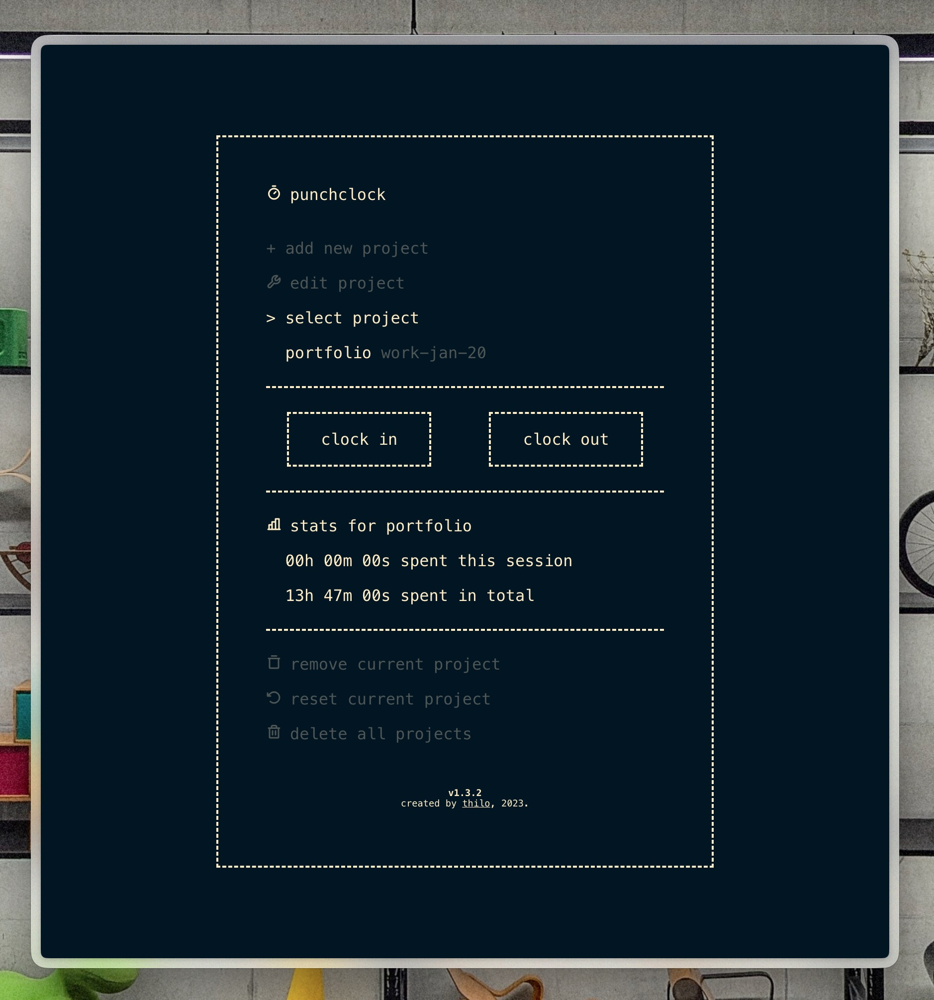
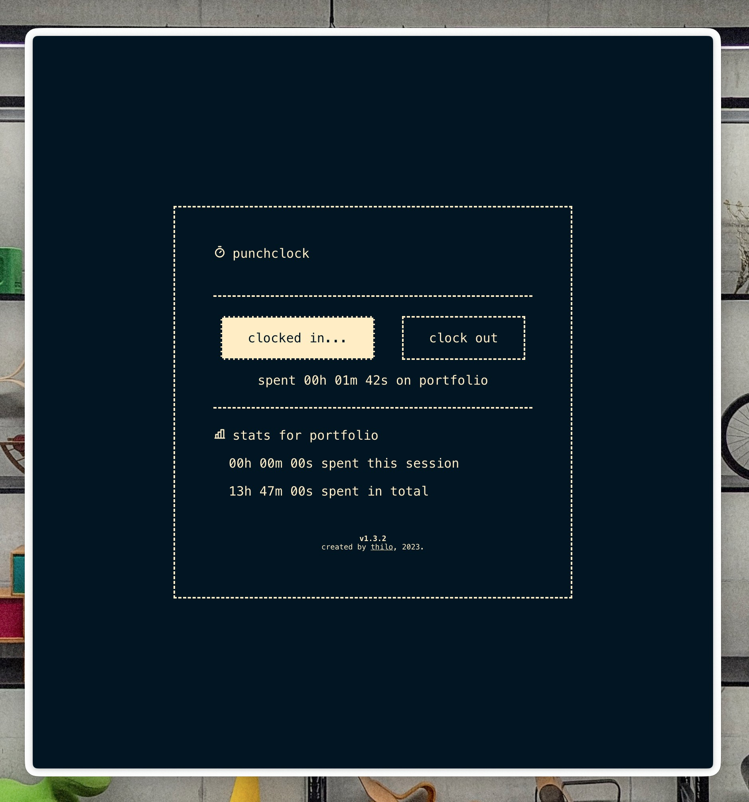
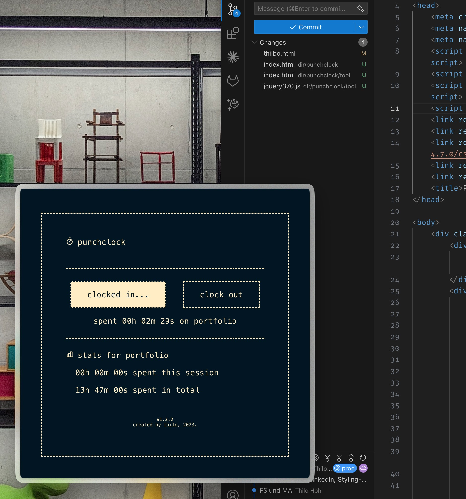

punchclock
Sommer 2023
Eine leichtgewichtige Stechuhr-Applikation, die für Projekte, Aufgaben oder Arbeit Zeit misst. An CLI-Ästhetik angelehnt, aber als WebApp mit HTML, CSS, JS und JQuery gebastelt.



Projekte werden per buttons oder mit CTRL + A angelegt und optional mit einer Zieldauer versehen. Dann kann man per Leertaste einchecken und während der Aufgabe das Tool im Hintergrund oder klein als Zeitreferenz laufen lassen.
Das Tool ist bislang nicht besonders funktionsreich und speichert in localStorage. Ein Log-Export und Statistiken (Zeit pro Wochentag usw.) wären sinnvolle Erweiterungen.